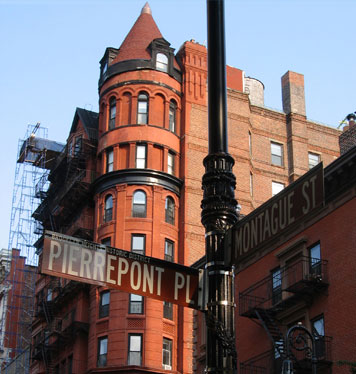

The Places You'll Go!
Brooklyn Hights
|  |
Cost: Free!
|
||||||||||||
| This is a warm, inviting and quaint neighborhood filled with beautiful brownstones. The streets are very pretty and peaceful. The main street is called Montague Street and this street is filled with stores and restaurants and at the end of the block you have the entrance to the promenade which is a cool place to sit, relax and enjoy the views of Manhattan skyline. | |||||||||||||